Artisti
La selezione
La selezione degli artisti per la mostra "Visioni Illustrate" è stata un processo meticoloso e ispirato, volto a rappresentare la vasta gamma di stili e voci nell'illustrazione contemporanea.
Un comitato di esperti ha valutato centinaia di candidature provenienti da tutto il mondo, con l'obiettivo di scegliere opere che non solo dimostrassero eccellenza tecnica, ma anche originalità concettuale e capacità di comunicare temi profondi o storie coinvolgenti.
I selezionati
L'attenzione è stata rivolta alla diversità di tecniche, dalla tradizionale alla digitale, e alla varietà di espressioni culturali, assicurando che la mostra offrisse uno spettro completo delle tendenze attuali e delle innovazioni nell'arte dell'illustrazione.
Icinori
Mayumi Otero and Raphael Urwiller’s prolific outpouring of work makes a very good case for living somewhere as they do in a quiet suburb just outside of Paris. They met as art students in Strasbourg a decade ago and now spend their days drawing, writing, painting, publishing, collecting, and, in their words, “expanding their inner universe”.
Their work is a breathlessly wonderful, modern folkloric study of scenes and characters that are at once of our world and from another galaxy altogether. Together, they love solving problems, getting lost in research, coming up with ideas, experimenting with new working methods, and, most importantly, finding joy and happiness from the result.
“Always be on the move, intellectually and spatially”, they say. “In a rare and exceptional moment, something incredible appears in a drawing; it’s pure magic, and it is precious and extraordinary. Most of our work is looking for those moments of grace”. Which is something we predict happens rather regularly.
Opere


Hattie Clark
Hattie Clark's illustrations are a pure reflection of her character - friendly, kind & enthusiastic. She draws the kind of folks you want to sit down and have a cup of tea with.
Based in Leeds (UK), Hattie has perfected her self-proclaimed 'wobbly' illustration style and loves to draw a wide variety of subjects, including people, animals and buildings.
She can work both digitally or by hand, using brush & ink (see if you can spot which is which). This also makes her work perfect for animation, as you can see throughout her portfolio.
Some of the people Hattie has worked with so far include: Stagecoach, Stack Magazines, Pieminister, Lucy and Yak, The Charity for Civil Servants, Bath Spa University, House of Fu, Leeds Bid. We predict that's a list which will grow and grow!
Opere


 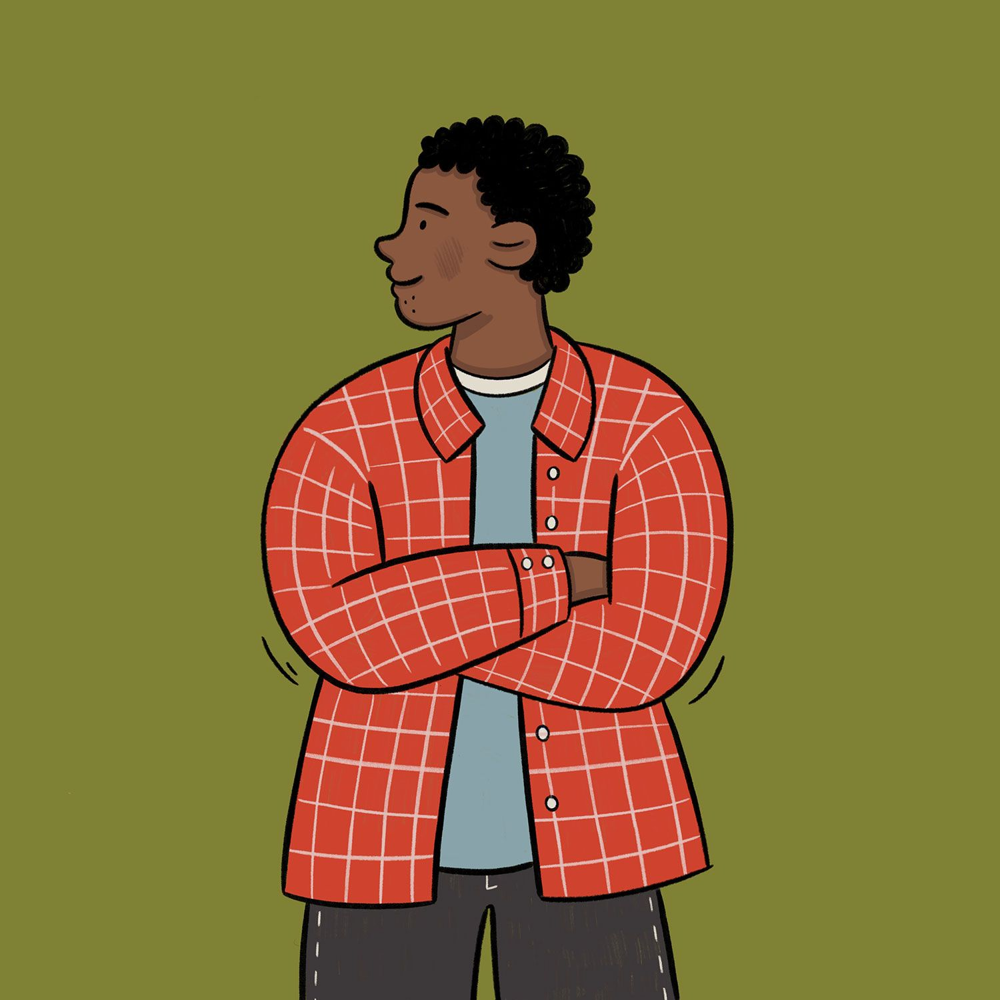
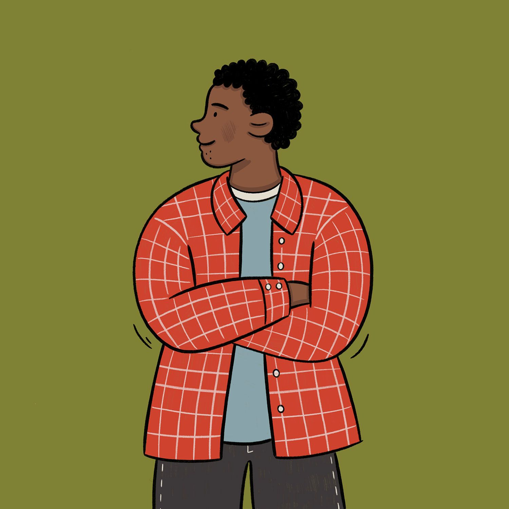
 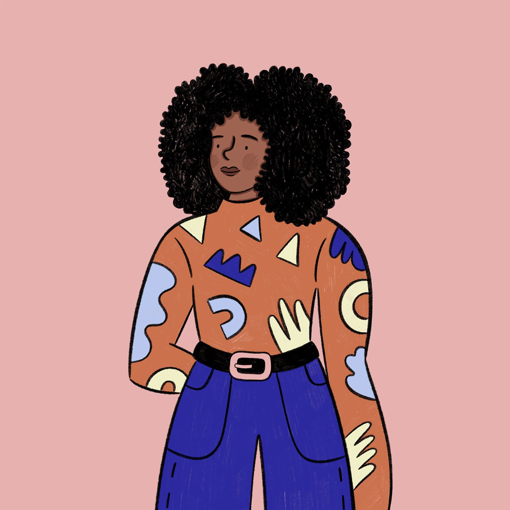
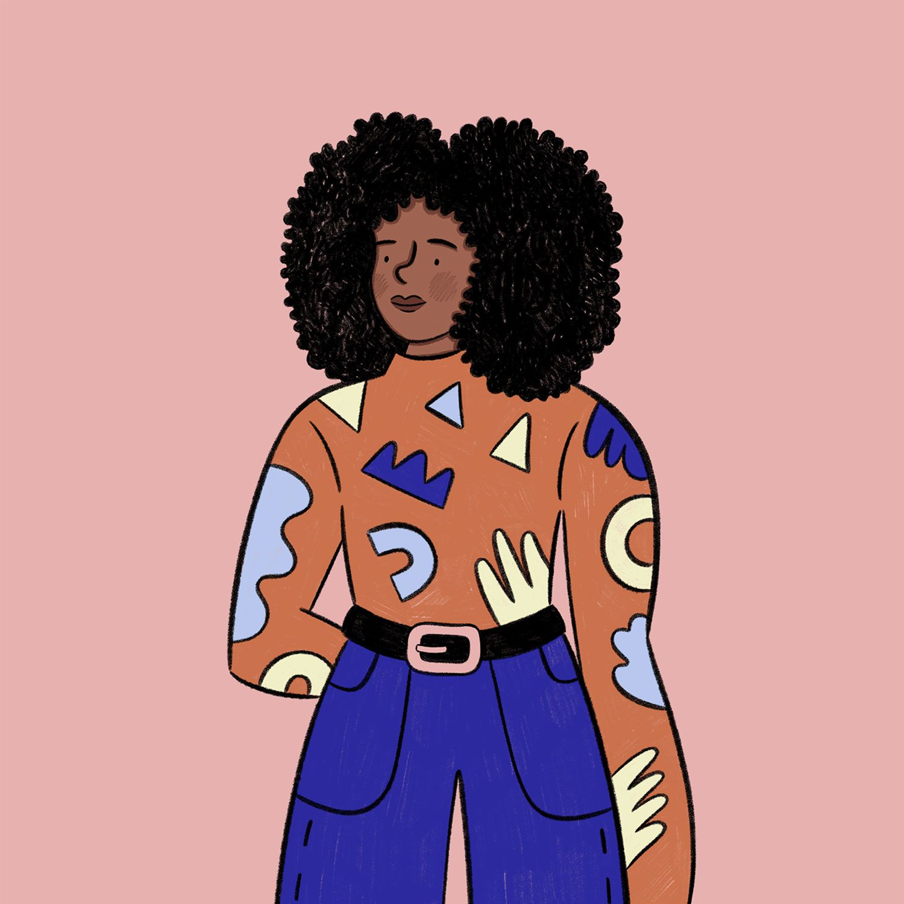
 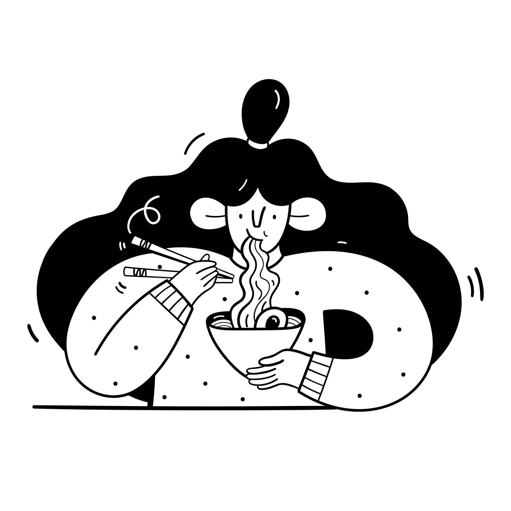
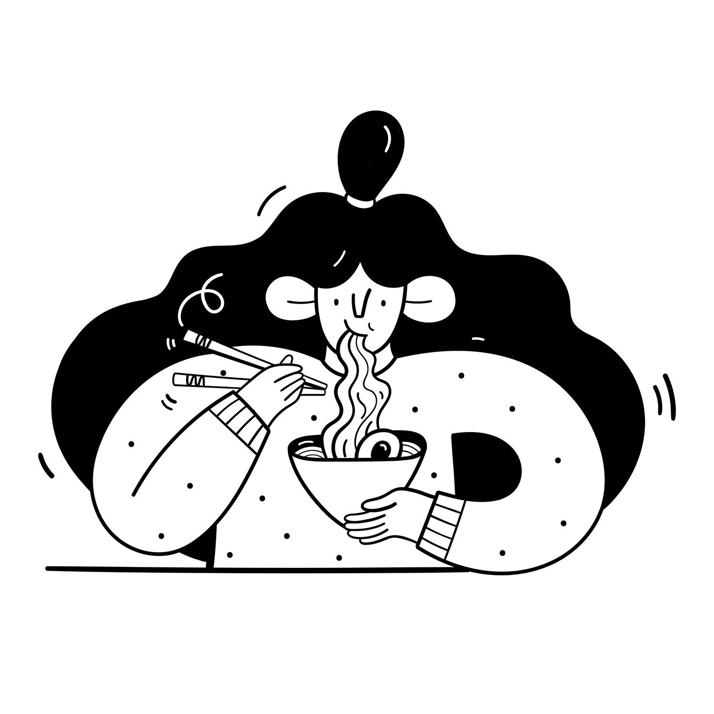
Paul Blow
Take a minute to lose yourself in the illustrated world of Paul Blow, you won't be sorry. At first he draws you in with a beautiful or eye catching image, but often there's much more to it than that. He's also telling you a story (or a joke) through his sublime work. A wickedly dry sense of humour runs through many of his best known images.
From the conceptual to the absurd, his versatile range sees him navigate seamlessly from high brow, to low and exist everywhere in between. From Jackass to the Washington Post, Doordash to Harvard, Paul's talents have seen him work a hugely diverse client list across the worlds of editorial, publishing and advertising.
Notable clients include Nike, The New York Times, Penguin Books and the Folio Society.
Opere


Jean Jullien
Where to start with Jean? He's the widely-adored French illustrator whose incredible popularity stems from his obsession, with interpreting the world around him.
From worldwide political commentary to doodling on windows, walls, tables and objects around him, Jean's work is instantly recognisable, inimitable and holds a purity that only truly can be borne from true passion for his craft.
Accompanying Jean's effortless, humorous style, is his incredible dedication. He juggles countless commissions, exhibitions and mediums simultaneously, driven by an undiminished need to communicate.
Opere


Emily Robertson
There is an inherent joy in the sweet, ink and water colour work of Glasgow School of Art graduate, Emily Robertson.
Mix that with her impressive ability to capture the smallest of details with the slightest flicks of her brush and you’ve got someone who can capture a mood, a style and the true character of her subject with a signature flair.
From juicy pastries and cosmetics to maps and stylish portraits of butchers, Emily’s eye for colour and texture is remarkable, and very popular among her clients, including: Anthropologie, Chanel, Faber&Faber, Marks and Spencer, National Trust, Pentagram NY and Port magazine.
Opere

 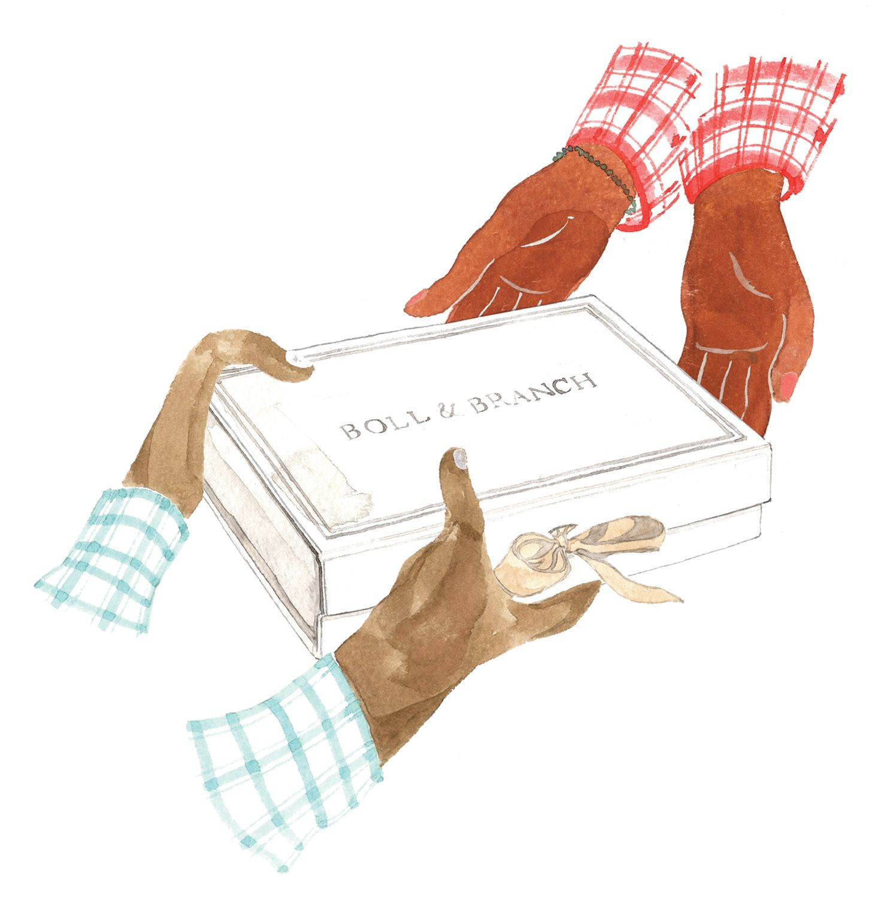
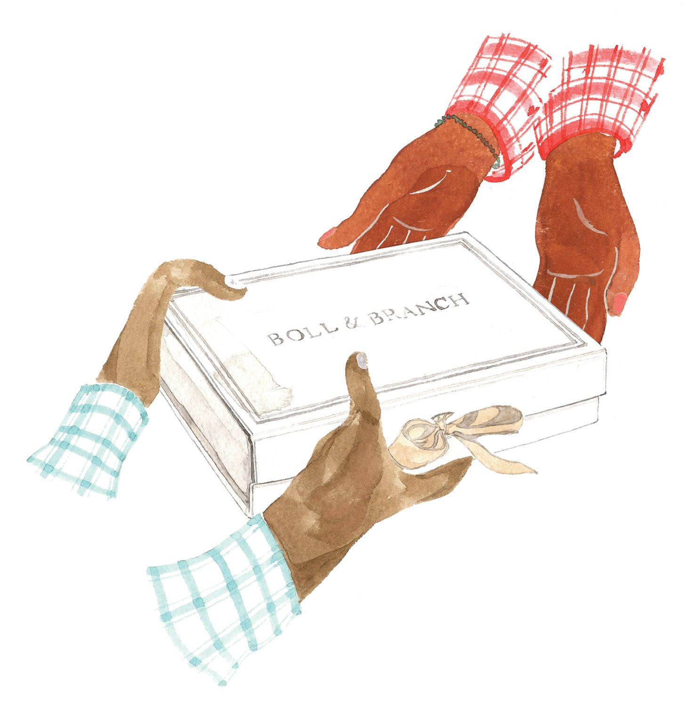


Michelle Thompson
RCA graduate Michelle Thompson is a UK-based artist who in the last twenty three years has created work for the Royal Mail, BBC, Reebok, Penguin Books, The Guardian as well as being profiled in numerous illustration books.
In short, she’s built a name for herself as the go-to illustrator for editorial collage work. Michelle creates her pieces with hand-layered papers and paints before editing them digitally.
Clients return to her time and again for her ability to convey heavy, dark subject matter with a lightness and accessibility which is rare to come by.
Opere

 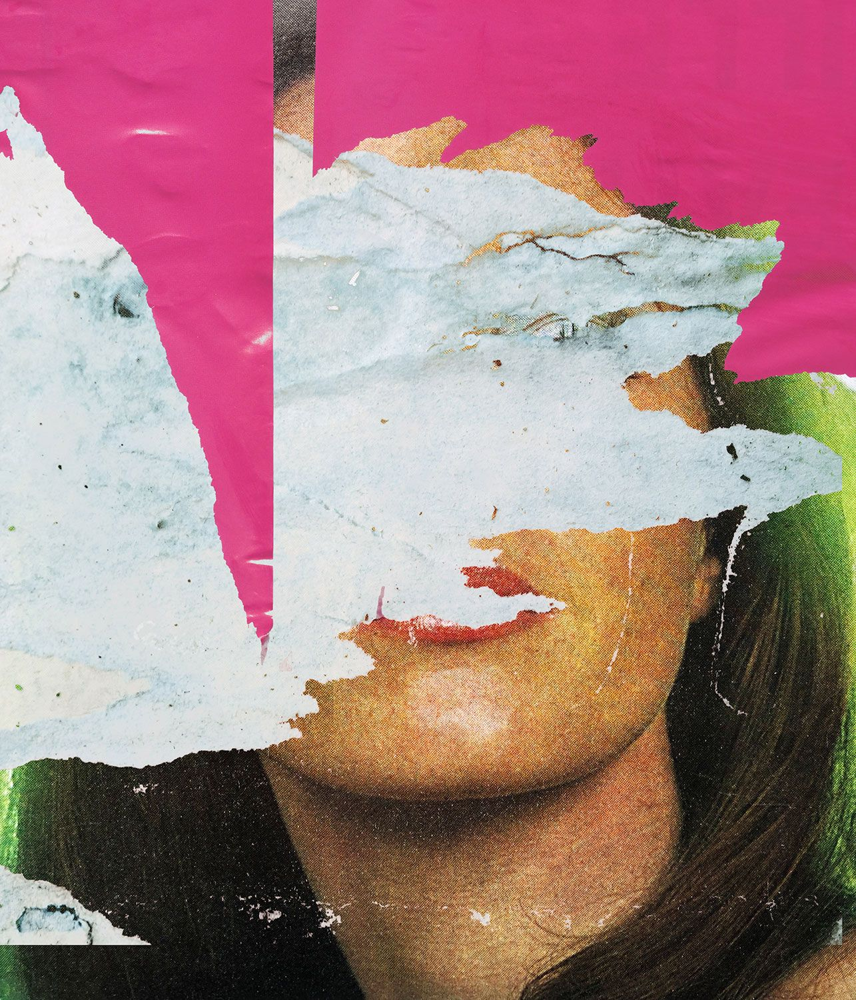
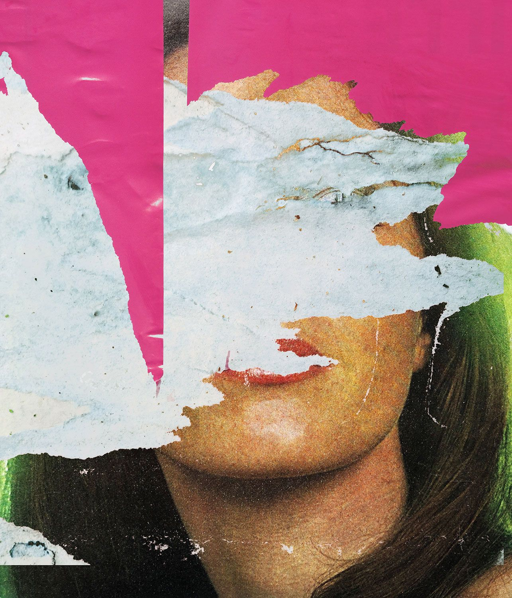


Adrian Johnson
Over the years, British graphic artist & illustrator Adrian Johnson has developed a unique and strongly identifiable body of work. His trademark economical, highly crafted graphic work constantly evolves while maintaining a healthy distance from current trends and passing fashions.
His attention to detail, humor, and simple, timeless sophistication mark him as one of the leading illustrators currently practicing. In addition to his commercial output, Adrian Johnson has exhibited work in London, Paris, New York, Chicago, Los Angeles, and Tokyo.
He has also lectured at numerous universities and art colleges throughout Europe and has been a guest speaker at several global design conferences. He lives and works in Copenhagen, Denmark.
Opere


Martina Paukova
Berlin-based illustrator Martina Paukova likes to dabble in the colorful nuances of everyday moments. “My work consists of daily mundane scenes and lanky characters, often with perplexed expressions and dated hairdos, sitting behind computers or sipping coffee”, she says. “I like to explore and mold the everyday, the awkward, and the bendy”.
Martina’s work has rocketed in popularity in the last couple of years, seeing her create humorous, jam-packed images in a trademark palette with Memphis-inspired patterns for an increasingly impressive list of clients. Previously, Martina studied politics in Slovakia before changing direction to study illustration at Camberwell College of Arts in London.
She now spends her days on various editorial and commercial commissions, injecting personality into an image in a way that is uniquely her own. Like a modern-day MC Escher, her colorful, quirky perspectives move and change, with each element slotting together like a well-crafted puzzle.
Opere


Sanna Mander
Arguably one of Finland’s most prolific illustrators working today, Sanna Mander’s cheerful work evokes catalogs and editorial illustrations of the 1960s with a contemporary twist. With that in mind, her illustrations can be applied to various products, packaging design, posters, editorial illustrations, and textiles.
In 2006, she won Cannes Young Creatives and was awarded Junior of The Year in 2007 at the Finnish Best of the Year advertising and design competition.
Inspired by the luscious flora and fauna surrounding her in her native Finland, Sanna’s images are mixed media odes to the unpredictable, cluttered joys of the world around her.
Opere
 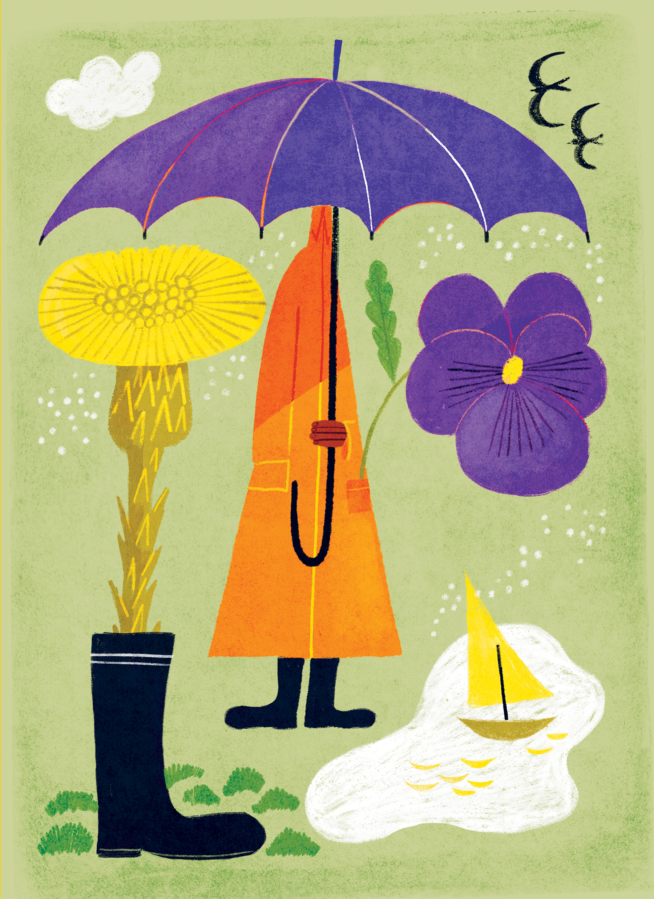
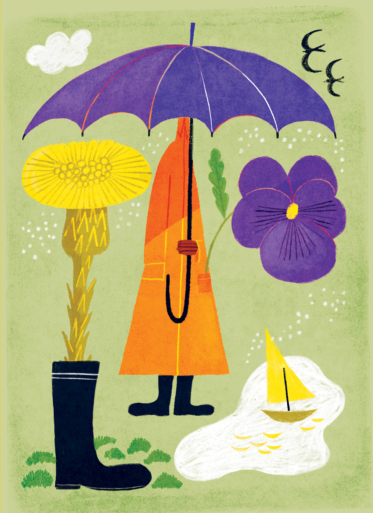